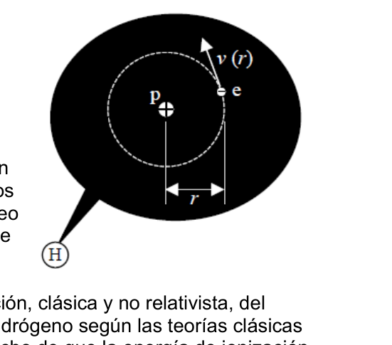

Classical Atom Collapse Time Estimate
PT87. Vicente López, Buenos Aires. Azul. El fracaso del átomo clásico. En los albores de las investigaciones sobre el átomo, a principios del siglo XX, se pensaba que éste tenía una estructura similar a un sistema planetario con el núcleo en
el centro, muy pesado y cargado positivamente, y los ligeros electrones girando a su alrededor, ligados por la atracción coulombiana. Pronto se descubrió que las cosas no podían ser tan simples: las cargas eléctricas cuando se mueven con aceleración, como los electrones orbitando alrededor del núcleo, pierden energía en forma de radiación electromagnética, por lo que los electrones atómicos se precipitarían hacia el núcleo en un tiempo muy breve. Está claro que no sucede así, puesto que la materia normal es estable y ustedes están aquí. Este problema tiene por objeto hacer una estimación, clásica y no relativista, del tiempo que tardaría en aniquilarse un átomo de hidrógeno según las teorías clásicas de la mecánica y de la radiación, partiendo del hecho de que la energía de ionización de un átomo de hidrógeno en su estado fundamental o no excitado es Eioniz = 13,6 eV .
- Suponiendo que la órbita del electrón es circular de radio r, obtenga las expresiones de la energía total del electrón E, de su velocidad v, de su aceleración a y de su periodo de revolución T, en función de la energía total E0 del átomo de hidrógeno en el estado no excitado y del radio r0 de la órbita circular en dicho estado.
- Determine y calcule E0 y r0 así como la velocidad, la aceleración y el periodo en esta órbita, v0, a0, y T0, respectivamente. Cuando un electrón se mueve con aceleración a, la potencia radiante que emite viene dada por la fórmula de Larmor:
en la que k es la constante de Coulomb, c la velocidad de la luz y e la carga elemental 3) Al perder energía, el electrón irá describiendo órbitas de radio cada vez menor. Halle la expresión de la potencia emitida P en función del radio r de la órbita circular del electrón, de r0 y de E0. Puede comprobar que tanto E(r) como P(r) tienden a infinito cuando r tiende a 0. Este absurdo físico es consecuencia de que en las antiguas teorías se idealizaba al electrón y al protón considerándolos como partículas puntuales. Pasemos por alto estos inconvenientes y vayamos al objetivo de este ejercicio: 4) ¿Cuál es el tiempo τ que le costaría a un electrón “caer” sobre el núcleo desde la órbita del estado fundamental de radio r0? AYUDA: La potencia radiada por el electrón (fórmula de Larmor) tiene que ser igual a la variación (con signo negativo) de la energía mecánica del electrón por unidad de tiempo, −dE / dt . Esta variación representa una pérdida de energía, de ahí el signo negativo. Le resultarán útiles las siguientes expresiones:
El tiempo τ lo obtendrá integrando entre los valores inicial y final de t y de r. (La integral es inmediata). DATOS: 1 eV = 1,60.10−19 J; masa del electrón me = 9,11.10−31 kg ; constante de Coulomb k = 8,99.109 Nm2C−2 ; velocidad de la luz c = 3,00.108 ms-1 ; carga elemental e =1,60.10 −19 C. CONCLUSIÓN: Si ha llegado al final del problema comprobará que la vida de un átomo según la teoría clásica es muy corta. El modelo de átomo clásico fracasa. La teoría cuántica es la que describe correctamente la estabilidad de la materia, prediciendo además las propiedades de los átomos.

Topic: Modern-Quantum Physics Metodi: Coulomb’s Law, Energy Conservation Method, Order-of-Magnitude Estimation Competenze: Physical Reasoning, Mathematical Modeling Objects: Electron, Nucleus Fonte: Testo (PDF) — p.3
Il sistema di controllo è stato modificato in modo da consentire la verifica del tempo di decomposizione.
PT87. Vicente López, Buenos Aires. Blu. Il fallimento dell’atomo classico. All’inizio del XX secolo, all’inizio delle ricerche sull’atomo, si Pensavo che questo avesse una struttura simile a un sistema planetario con il nucleo in
il centro, molto pesante e carico positivamente, e i leggeri elettroni che ruotano intorno a loro, collegati all’attrazione colombiana. E presto si scoprì che le cose non potevano essere Le cariche elettriche quando si si muovono con l’accelerazione, come gli elettroni. Orbitando intorno al nucleo, perdono energia in La radioterapia è una forma di radiazione elettromagnetica, che Gli elettroni atomici sarebbero precipitati verso il nucleo. In un breve periodo di tempo. È chiaro che non succede. Quindi, visto che la materia normale è stabile e Voi siete qui. Il problema è quello di fare una stima classica e non relativistica del Il tempo che ci vorrebbe per annientare un atomo di idrogeno secondo le teorie classiche. La tecnologia di ionizzazione è un’ottica di ricerca e di ricerca. di un atomo di idrogeno nel suo stato fondamentale o non eccitato è Eioniz = 13,6 eV .
- Supponendo che l’orbita dell’elettrone sia circolare di radio r, si ottengono le espressioni di energia totale dell’elettrone E, della sua velocità v, della sua accelerazione a e della sua Il periodo di rivoluzione T, in funzione dell’energia totale E0 dell’atomo di idrogeno nel stato non eccitato e il radio r0 dell’orbita circolare in tale stato.
- Determina e calcola E0 e r0 e velocità, accelerazione e periodo in questo Orbita, v0, a0 e T0, rispettivamente. Quando un elettrone si muove con l’accelerazione a, la potenza radiante che emette viene data dalla formula di Larmor:
dove k è la costante di Coulomb, c la velocità della luce e e la carica elementare 3) Perdendo energia, l’elettrone descriverà orbite di radio sempre più ridotte. Trova l’espressione della potenza emessa P in funzione del raggio r dell’orbita circolare di r0 e di E0. Potete vedere che sia E (r) che P (r) tendono all’infinito quando r tende a 0. Questo . L’assurdità fisica è la conseguenza che nelle antiche teorie l’elettrone era idealizzato. e il protone considerandolo particelle puntate. Lasciate perdere queste. I risultati sono stati ottenuti con un’attenzione particolare. 4) Qual è il tempo τ che costerebbe un elettrone di cadere sul nucleo dal Orbita dello stato fondamentale di radio r0? Aiuto: la potenza irradiata dall’elettrone (formula di Larmor) deve essere uguale a la variazione (con segno negativo) dell’energia meccanica dell’elettrone per unità di tempo, −dE / dt. Questa variazione rappresenta una perdita di energia, quindi il segno Negativo. Le seguenti espressioni sono utili:
Il tempo τ lo si ottiene integrando tra i valori iniziali e finali di t e di r. (La integrale è immediato). DATI: 1 eV = 1,60.10−19 J; massa dell’elettrone me = 9,11.10−31 kg; costante di Coulomb k = 8,99,109 Nm2C−2; velocità di luce c = 3,00.108 ms-1; carico elementare e =1,60.10 −19 C. CONCLUSIONE: se si è arrivati alla fine del problema si verificerà che la vita di un Secondo la teoria classica l’atomo è molto breve. Il classico modello atomico fallisce. La teoria quantistica è quella che descrive La struttura della materia è stata corretta, prevedendo inoltre le proprietà dei Atomi.
Topic: Modern-Quantum Physics Metodi: Coulomb’s Law, Energy Conservation Method, Order-of-Magnitude Estimation Competenze: Physical Reasoning, Mathematical Modeling Objects: Electron, Nucleus Fonte: Testo (PDF) — p.3
The following is the list of the most commonly used methods of measuring the temperature of the atmosphere:
PT87. Vicente Lopez, from Buenos Aires. Blue, please. The failure of the classical atom. At the dawn of atomic research, in the early 20th century, the I thought this had a structure similar to a planetary system with the core in it.
the center, very heavy and positively charged, and the light electrons spinning around it, linked by the Colombian attraction. It soon became clear that things couldn ‘t be . The electrical charges when they are They move at acceleration, like electrons. orbiting the core, they lose energy in The electromagnetic radiation is the form of electromagnetic radiation, so the atomic electrons would rush into the nucleus. In a very short time. It ‘s obviously not happening . So since normal matter is stable and You’re here. This problem aims to make a classical, non-relativistic estimate of the It would take time for a hydrogen atom to annihilate according to classical theories. The first is the fact that the energy of ionization is not the same as the energy of the electron. of a hydrogen atom in its fundamental or unexcited state is Eionis = 13.6 eV .
- Assuming the electron’s orbit is circular with radius r, get the expressions of the total electron energy of the electron E, its velocity v, its acceleration to and from its The energy of the hydrogen atom in the hydrogen atom is the energy of the hydrogen atom in the hydrogen atom. The radius of the circular orbit in that state is not excited.
- Determine and calculate E0 and r0 as well as the speed, acceleration and period in this orbit, v0, a0, and T0, respectively. When an electron moves at acceleration to, the radiant power it emits comes. given by the Larmor formula:
where k is Coulomb’s constant, c is the speed of light and e is the elementary charge 3) As the electron loses energy, it will describe ever smaller radio orbits. Find the expression of the emitted power P in relation to the radius r of the circular orbit The electron, r0 and E0. You can see that both E(r) and P(r) tend to infinity when r tends to 0. This one . Physical absurdity is a consequence of the old theories idealizing the electron. And the proton, considering them as point particles. Let ‘s just skip these . The main objective of this exercise is to: 4) What is the time τ would cost an electron to fall over the nucleus from the orbit of the fundamental state of radio r0? HELP: The electron radiated power (Laurmor’s formula) has to be equal to The change (with negative sign) in the mechanical energy of the electron per unit of time, −dE / dt. This variation represents a loss of energy, hence the sign negative. The following expressions will be useful:
Time τ is obtained by integrating the initial and final values of t and r. (La The total is immediate). DATES: 1 eV = 1.60.10−19 J; mass of electron me = 9.11.10−31 kg; constant of Coulomb k = 8,99,109 Nm2C−2; speed of light c = 3,00.108 ms-1; elementary charge e =1,60.10 −19 C. CONCLUSION: If you have reached the end of the problem you will find that the life of a The atom according to classical theory is very short. The classical atomic model is failing. Quantum theory is what describes it . The main objective of the study is to determine the properties of the materials and their properties. The atomic number is 0.
Topic: Modern-Quantum Physics Metodi: Coulomb’s Law, Energy Conservation Method, Order-of-Magnitude Estimation Competenze: Physical Reasoning, Mathematical Modeling Objects: Electron, Nucleus Fonte: Testo (PDF) — p.3